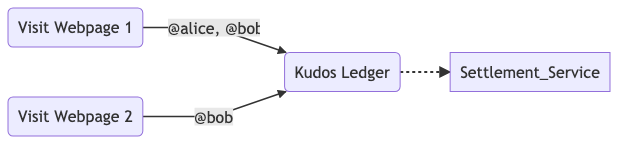

| Title | Kudos: A Protocol for Compensating Contributors |
|---|---|
| Type | working-draft |
| Author | Matt Mankins
|
| Draft | 1 |
Who pays for the internet?
In a somewhat unbelievable chain of relationships, we pay for internet access, which in turn entitles us to communicate packets of information anywhere on the globe without thinking about payment again. We pay to get in the door, and from there the world is ours...at least until we hit a paywall.
There is much to be said about how revolutionary the internet is–across many if not all facets of society–yet there is one impact hinted at above that we want to explore further: the removal of the linkage between consumption and payment. We are reminded of public goods, for public goods are free to use but supported collectively. While we never directly pay for a traffic light, we do pay indirectly through governments who support public services in exchange for our tax payments. Are internet applications public goods? While internet applications and software can be used by everyone globally and resemble parts of a public good, they are not usually funded by governments and are not easily definable as public. Instead through a bit of digital sleight-of-hand the commercial internet exchanges free access for the implicit (potential, future) right to monetize our transaction.
It's this transformation from public good to commercial transaction that sets the stage for our further exploration into alternative methods of monetizing digital interactions. While we can list the negative ramifications of this free access bargain, we wish to show that new modes of digital interactions could lead to dramatically different–and we think positive–ways about thinking about economic reward in the digital age. We aim to show that a new system of reward that we're calling kudos could be used to reshape how we think about work, and furthermore conclude that it's simultaneously the most just and also highest profit route to creation in the digital economy.
Before we get to kudos, it's helpful to highlight some key elements of our current digital state. As the internet and its applications like the world wide web, email and blockchains grew, we saw goods and services built on top these applications that relied on business models primarily utilizing network effects –oversimplified this is: build it first, grow it with non-paying users (and their content) and only then do you figure out how to convert the mass of activity into money, a process crudely called "monetizing eyeballs."
One side effect of these network applications is that while at the start of a project there exist many players vying for users, ultimately the largest network wins because it is the most useful. Sometimes the winning product is controlled by a corporation–as in the case with Facebook–and sometimes it's an open protocol, like SMTP in the case of email. Ultimately we have a choice between protocol-driven apps (blockchains, email, decentralized finance, etc.) and corporate-led apps (Slack, Google, Facebook, etc.); finding the right home for a project may take many years of "cut-throat evolution" or "market activity" depending on your point of view.
To use a more concrete example of a closed, private application employing network effects, it's easy to cite Facebook. Facebook built one of the world's largest companies in terms of value by relying on the network effect implemented by giving users free access to a subset of all social data. Five years after launching their application was large enough that it could apply existing monetization schemes like advertising and make more than enough to cover its costs. As of 2021 Facebook changed its name to Meta and made $39 billion in net income [1].
In many ways the story of Facebook developing on the internet resembles a company raising capital for creating a factory–the number of people employed, specialized tools, management techniques, and significant infrastructure expenditures needed is similar enough to the model of a factory to treat Big Tech's operations as an evolution of an industrial factory's for our purposes. Factories take time to set up and produce the first widget. It also takes time to build a valuable network application, composed of widgets of the software variety.
Today's Facebook may resemble an industrial factory from a century ago, however the startup Facebook from a decade ago–the one focused on building its social network and giving it away for free to early users–resembles more of what we'll call the "contributor model". Our subsequent argument is that if Facebook were created today it would likely choose this contributor model over its factory operations both for reasons of simplicity, profit, and community wellbeing. There exist many shapes of contributor-driven development, some of which Facebook itself has embraced, such as utilizing armies of free open source developers to help with its business and community objectives, a topic we'll explore further.
Facebook and other Big Tech companies have largely figured out a model for building and subsequently monetizing their projects through the "eyeball" method–create a product with a network effect, grow the network, sell the data to someone who finds the data of all those eyeballs valuable. We don't find fault in this evolution, for it's the natural state to employ old methods to new systems, we just think there's a better way. Corporations by design are built to distribute profit to shareholders and product to customers. In the Facebook example, just as in the creation of a factory, it was the "owner" of Facebook–the corporation called Meta–that reaped the largest financial gains even though they rely on the labor of employees and "customers" to keep the social-factory operating. We hypothesize that as corporations grow large they become fragile as individual contributions and interactions receive remunerations that are not commensurate with overall corporate mass, leading to questions of fairness, justice, and accusations of the corporation not being a good citizen, whatever that might mean for a non-human entity.
Prior to the development of the price tag, goods were variably priced [11]. Price tags were seen as a fair revolution as everyone paid the same price for a product. With much of the content on the internet a fixed pricing strategy fails, as limiting viewers has the unintended side effect of decreasing the size of the content network, diminishing the network income. One approach that's been suggested to combat this is to make the price not zero, but near-zero via micropayments.
With the rise of cryptocurrencies it is now possible to have units of currency smaller than 1¢. Bitcoin's smallest unit is the satoshi which is valued on the order of magnitude of a ten-thousandth of a US dollar. While we now have technically the ability to price and spend in units of less than a penny, micropayments have not taken off, in part because the problem they are trying to solve has never quite been defined. Micropayments certainly could be useful in some situations–perhaps as part of a game, but in practice there are challenges in pricing and usage that prevent their deployment at scale.
Digital advertising could be seen as a micropayment system. After all, ads are priced in units of CPM, "cost per mille" or "per thousand impressions". Each time we see an ad, a micro transaction is happening in a ledger of an ad server. We are "paying" in our attention, and the advertiser is paying the website a thousandth of an agreed upon price. This realization led to the idea: What if we could replace ads with direct payments? We attempted this idea, essentially allowing users to "buy their own ad" which is like using micropayments to pay for content instead of ads, yet this was unsuccessful [3]. In this experiment we learned that one of the largest obstacles of deployment of micropayments is the mental transaction cost.
Even though the price of a good may be a fraction of a penny, we're human and used to weighing its worth against alternative capital uses. This hesitation–the mental transaction cost–has stood in the way of full-scale implementation of micropayments. Like the ticking on a taxi meter, micropayments are present spending which causes hesitation, something often against the goal of getting a user to spend more. Without micropayments we have packaged goods in higher units and split them up, similar to the previous ad example. We can buy 10,000 health points in a game for $1 and have the same effect as buying 10,000 points individually. (Here we ignore the significant overhead in processing payments, micropayment or otherwise which can drastically alter profits.)
Another approach to pricing for digital content pioneered by Web Monetization [14] involves "streaming" micropayments from reader to creator at a rate not to exceed a monthly expenditure cap. In this manner the value set aside for "content" is fixed over the course of a month and then it is "directed" toward creators via real-time transactions. This change in allocation of monthly subscription fee better aligns usage with value and has the effect of busting the fixed price tag.
We believe that the technique used by Web Monetization (and by ourselves at In-a-Moon and likely others before it [15]) of fixing a monthly budget and post-consumption allocating a price is both fair and arrives at an accurate approximation for value received. While micropayments may be useful to the accounting of individual transactions they are not required for implementing kudos as outlined herein.
We are all consumers. We are all producers. We all need to eat.
With this background we arrive at a set of desires to lead us forward into a hopefully fair system to reward contributions [16]. A global economic system for contributions should:
Work equally well for big and small entities without regard to their size and social status or even corporality.
Reward the attribution rather than the artifact.
Promote distribution, social sharing and network building. Good ideas should be incentivized to spread.
Be unfettered and free to explore, discover, and add; look back, using time as the arbiter of value obtained.
Be reversible within a window so tricksters have their work cut out for them.
Be open, allowing multiple different implementations to co-exist and address the complexity of society.
Is there a more equitable way to reward contributions in the digital age? Is the corporation the most efficient vehicle to employ capital for gains?
In the rest of this paper we wish to show that these questions are related and that there exists a model to evolve our global financial ecosystem from an age centered on faceless widget factories to a global village with equitable, human-scale economic exchanges that reward contributions of widgets and set a fair price for value exchanged.
Chit-chat that was once ephemeral now lives on as part of the greater global conversation, adding its small drop to the waves of the world wide web's data ocean. Software development–once done in isolation–is now highly collaborative with loose-knit and constantly changing teams composed of individuals that want to improve the world through code. A tweet and a few lines of code share more in common than it might first seem, for they are both modern, small units of work, the modern widget. Kudos is a system to help creators–workers–get paid for these contributions.
The internet allows our presence to transcend geography, which makes it easy to add value to many projects over the course of a day. It was not always as easy to contribute to multiple companies. Past workers were limited in their physicality, being able to work at one or maybe two jobs in a day. Factories relied on local scarcity of jobs to keep their operational costs low as the lack of job options for workers kept them employed with one company.
With the rise of the internet we quickly became connected to other people who shared our interests, no matter how mundane. Newsgroups, forums, blogs, subreddits and of course Facebook groups formed to help us share and contribute our "love of X". This is not new, because we had hobbies before the web, but they were limited by physical geography. Maybe there's one chess club in town with a dozen members compared to the 30,000 member Internet Chess Club online [2]. These new-found connections multiplied the impact of our contributions and simultaneously grew the app's network and potential net worth, not to mention drawing more people online.
What do we call all of our digital footprints? Are our digital artifacts ownable? If so, who owns them? We don't think of tweeting as work, but should we be able to get paid for it?
Each time we chime in with a bit of conversation in Twitter, we're adding data to Twitter, but we're also (hopefully) enriching society, even if to our small audience in the global village. Our digital data is housed within the applications built by Big (and not so big) Tech and we treat it as a free side-effect of our usage of the network. The click-through agreements we haven't read give our digital data over to the application to monetize, inking the legalities of our free-use bargain. Our digital artifacts are manifestations of the work of modern times and not without value.
Clearly our digital footprints have value, for they are the basis of billions of dollars in advertising campaigns annually, but is there a way for individuals to extract our portion of revenue the same as an application might? Do we need the amalgamating properties of an ad network to package and sell our footprint, or can we monetize ourselves without the need of an app intermediary? We believe that it's possible to build a system that moves money towards value received in a manner that is neither cumbersome nor that much different from what we currently are doing. Kudos moves money towards the creators of contributions, the modern widget.
Are platforms a requirement to make money online?
Certainly, to monetize ourselves online we will need technological help. Applications live within the boundaries of the "tech stack" that they are contained within. This means that our tech stack creates but also limits our economic potential. Those that have imagined global scale application architectures tend to either treat their application as closed and so require recreating everything, or open in which they specify little but leave the communications protocol rigid. Apple's iPhone tends towards a closed architecture whereas Android is slightly more open in its approach.
Building a payment system into a global-scale but open application is not without precedent, at least conceptually. Ted Nelson's precursor to our modern web called Project Xanadu contained an embedded royalty system that enabled creators to obey copyright and royalty obligations [6]. Xanadu chose to specify large parts of the monetization system using a concept where one "quoted without copying" called transclusions [7] that is inspirational to kudos. The cumbersome nature of Xanadu's proposed implementation is also a warning to the risks of over-specifying implementations and a reminder of the need for a protocol to evolve via community feedback. We cite these as key motivators for kudos maintaining open design principles, however there is a risk of under-specifying as well as we can glean from the current web state.
Likely wary of the pitfalls of Xanadu's commercial enforcement scheme and also benefiting from approaching hypertext from an academic environment, the web's HTTP protocol trod more slowly in suggesting a full commercial micropayment implementation. While there is a placeholder for a payment mechanism built into the web's HTTP protocol, its details are still "reserved for future use" twenty years later [4]. Consequently, coding payment has been pushed from infrastructure out to the application layer where a large portion of developer workload over the last two decades was spent on recreating login (identity) and payment flows.
There is hope for evolving the web, as the web3 movement solves many of these login and payment problems [8], although it's not clear its solutions alone will be enough to overcome the large interface challenges surrounding payment and identity that has kept the technology limited inside a bubble of crypto enthusiasts. Kudos wants to specify enough to keep us from collectively coding the same program millions of times, but also stay out of the way to enable a hybrid of approaches to match real-world conditions for all the corners of the global village.
Designing the mechanism for fulfilling payments via a cohesive application architecture is not the only challenge we have to solve in order to monetize our own digital footprints, for we must decide how to value our digital contributions. How do we price something we're getting for free, especially in a world in which two people might value contributions completely differently, but most people would be reluctant to pay anything for them as a unit.
What's a tweet worth that saves your life?
To illustrate the concept, let's assume that we set a universal price for contributions of $C. A tweet is valued at $C. A blog post is also $C. It also costs $C for an article reported, copy/photo-edited and contextualized in a website of similar content. Are all the $C's actually of equal value here? Probably not. Imagine a tweet telling you a tsunami is coming to your town, how much is $C worth? What if the same tweet was to a town across the world? What if you used to live in that town and have elderly relatives there, what is $C then? Valuing content is complicated, in part because you don't know what the content is worth until after you've consumed it, and even then it may take years to put the pieces together. Methods of paywalling content ahead of time tend to only work for brands that are familiar to consumers and even then with a soft paywall that values $C at $0 for the majority of users.
Valuing contributions in general is similar to valuing content. For example, take a line of software code added to an open source repository that fixes a software error for $C. What happens in a week when it's discovered that the line creates another bug? Not all bugs are equal in impact, and so not all lines of code are equal on impact either. Ideally we'd be able to create a system that aligns $C with impact received. If we're dreaming, we'd make it such that impact is determined per individual and aggregated across the globe to arrive at an aggregate $C for the worth of the contribution.
It's hard to say where the value lies globally and locally, but we can agree that each contribution is nevertheless real work, done by a human or a team of humans with varying degrees of economic incentives for their production. When we're contributing because it's our hobby there's less of an expectation for payment. Yet we have a whole class of new job titles, like "Influencer" or "Podcaster" that realize that their online footprints are valuable and should not be treated like unpaid hobbies. These jobs are work disguised as harmless digital activity; this activity takes place on the networks that define the boundaries and place of our lives.
Contributions are modern work units of output. In kudos we sketch out a system in which these contributions can be fairly valued in a way that works alongside our current understanding of life in our global village–most things are free to access and this is good. We see these contributions as living within a framework that is hopefully neither too large which makes it fragile and hard to deploy, nor too small requiring too much repetitive work in practice.
We imagine a unit of value called the kudos. Kudos is an acknowledgement that someone helped you–that value was received. There is no explicit currency or promise of payment associated with the creation of a kudos. There's no specific price tag requested by the creator. In this way, kudos is more like an attribution in an academic paper than a payment of a bill. A kudos is like a mention in a tweet or a caption on a photograph. Whereas Xanadu's transclusions reference to the original work, kudos are a record comprised of a creator's id and a timestamp which is recorded in our own local ledger as a single kudos entry. Kudos then is a system in which we record–hopefully automatically–the identifiers that we encounter in our lives online.

We then imagine a kudos market–a system that directs funds towards a grouping of past kudos–in a process called settling. Settling is taking some money and sending it to everyone on your current kudos ledger. You could imagine setting a budget, for example $100/month for open source software development, and then recording all the open source developers in your kudos ledger, completing the process in settling your ledger by splitting the $100 amongst all the software developers on the ledger.
As an example, you can think of a tweet as having enough information to create a kudos: It has content and a creator handle, ex: "I tweeted" - @mankins [9]. We can record that @mankins gave us "some value" by adding @mankins to our individual kudos ledger. We can contemplate whether or not @mankins deserves that we direct money towards them. We can decide they don't and remove them from our ledger or otherwise mark that they should not be paid. Regardless of whether we remove or add @mankins to our kudos ledger we expend a fixed amount of money–the only difference with whether @mankins get paid and the money left over for the others on our kudos ledger.
How do you know the source of the content? What Id do you use for the creator? How does the creator translate money sent to an Id into currency?
We won't specify a universal identity scheme here, instead treating any Id as valid as long as it is consistently applied over an individual kudos ledger. Ultimately if that kudos ledger is to be settled, then there needs to be a way to map an identity to a payment account. This kudos specification won't dictate the ways that should happen only to suggest that Ids are locally unique and applied consistently.
In designing kudos we are going on the assumption that Ids already exist on content and can be gleaned from the application context. We think of Twitter handles, email addresses, GitHub handles, Reddit usernames or HTTP meta data as common examples of defacto public ids currently in use. Developers can imagine using protocol standards like WebAuthn [12] to sketch out an Id authentication gate, however we consider the details of this implementation to be future work.
Settling via a ledger–really just a list–allows individuals to set the value per interaction uniquely based on local interpretations of a value function. It's likely that my kudos ledger is different than yours which matches the reality of the value I received being different than yours.
Just because a kudos is recorded doesn't mean that it needs to be settled. In that respect, kudos is "maybe money": maybe it will translate into a payment, maybe it won't. Maybe it will be worth a lot, maybe it will be worth nothing.
With but a few simple rules, kudos can automate the sending of money in the direction of the creator in a size equal to value received. An easy way to send money to a kudos list is to split the contributors by the number of mentions. We can imagine many other rules that tweak the fairness of our distribution, but will leave that as future work.
Kudos is not a micropayment–or a payment at all–but does build on some of the problems uncovered with micropayment transactions. Kudos also builds on the techniques of network-scaling where applications give away free access. Instead of monetizing these transactions in the future with data or ad sales, kudos provides a route to move money from user to creator directly through a series of phases. Note that there could be many different implementations of kudos, herein is one basic version that may not cover all real-world edge cases.
The first phase in kudos is to record the kudos (there is no kudo [5]) which at its simplest is an identifier of the source that helped you and a timestamp. This necessitates understanding who the source is, itself a rabbit-hole of digital identity confusion derived from a protocol without a built in concept of identity. For our purposes we're going to punt on creating a new identity system and instead piggy-back on top of existing identity namespaces when possible.
By this we mean a kudos source can be a Twitter handle, Reddit username, email address, website domain, or any of numerous other identifiers, each with their own unique namespace, such that the couple { provider, id } is enough to globally identify someone, for instance { Twitter, @mankins }. This Id does not need to have an associated payment method attached as the phase of recording kudos is uncoupled from payment details.
We shall see in a future example how this might be done equitably, but for now we assume that in order for a kudos to be created, we are able to record an identifier that represents the source. Some implementations may wish to do cryptographic functions here to prove that we are the source of the kudos, or to segment kudos into ledgers of various types, however for this case we're going to treat phase one as being recording identifiers and timestamps into a kudos ledger. In the most low-tech implementation this could be done with a pencil and paper, listing all the sources encountered.
We imagine that kudos support will be built into our digital devices, silently recording ids that helped us as we see them. We then recommend taking this kudos ledger, perhaps once a week or once a month, and enacting phase two: settling kudos.
Settling kudos involves taking your kudos ledger to a kudos settlement service which will then move money from your account to all of the kudos identifiers from phase one. A simple way of implementing this would be to fix the amount of money you'd like to spend (in this case on digital content from your web browsing) and split it between all the kudos identifiers on your list in proportion to how often they appear on the list. You could imagine an editing interface to make sure that you're not moving money to sources you don't want to support. Settlement services can add their own algorithms to change the distribution of funds or provide other analytics services to change your allocation based on personal preferences.
The last phase of kudos then is handled by the kudos settlement service which will attempt to move money to all the identifiers you've identified. In the beginning the majority of these won't have accounts. We recommend using notification services to let the people identified know that they have money waiting. Any users who have not retrieved their funds in a certain amount of time can be put into the next settlement phase in an effort to keep moving money towards the creators. There are numerous complications to this implementation such as various Know Your Customer laws to prevent money laundering that these settlement services will need to comply with, however recent work with cryptocurrencies has moved this from difficult to possible.
Why would I pay to settle kudos?
Through a combination of legal agreements, path of least resistance user interfaces fueled by subscription fatigue, and goodwill we believe we can gain a place in the quest to be financially supported by our positive additions to the global village. Ultimately we have to be useful to creators and end-users alike, balancing carefully between the needs of both sides of our audience.
We believe that given the choice between being the product [13] and paying to support all contributions many would chose to voluntarily settle kudos for cash. Likely more users would use kudos in applications that can replace paywalls with friction-free reputation checks that will allow kudos users into premium sites. Other use cases, like open source software development can require new licenses that mandate payment or kudos-style contributions in order to use the system.
My "must read" website is likely different than yours. Ideally we'd be able to use this fact to get users to pay for their favorite (highest value) contributions and in return help support the rest of the contributions they visit. You could imagine a system that helps onboard users into paying for global contributions in return for premium content. Consumers note "subscription fatigue" already, so the idea would be to bundle several subscriptions into one supporting kudos and in return the community benefits.
Clearly not everyone will be able to afford to pay–nor will they want to. This is perhaps the biggest practical hurdle for the kudos scheme, but we believe there's a path to build a payment network that is so efficient at applying capital that it drives adoption while finding a way to be inclusive. We suggest using the act of recording kudos as a requirement, as this is free. When a user has money to support content they can settle their kudos in the future, retroactively supporting their past usage.
To start we are suggesting early kudos infrastructure builders to target industries where they can force the monetization of contributions through legal agreements. Open source contributors, for example, could decide that they want to be compensated for their contributions and specify kudos as an acceptable compensation methods (alongside other traditional methods such as enterprise software licensing).
Is kudos a network, algorithm or protocol?
At its core kudos is incredibly simple: a list of ids and a timestamp. You can implement kudos in a spreadsheet or with a piece of paper. Would you want to implement kudos this way? Probably not as you'd spend more time writing things down than interacting with them. Instead we imagine that kudos service providers will implement the kudos protocol which attempts to provide guidelines for service providers to stay in sync in their implementations.
The kudos architecture imagines that users interact with content, created by contributors. Contributors are identified by their globally unique Id which is identified by a kudos ledger app, perhaps built into a web browser or extension. The kudos ledger app writes any kudos entries–the Contributor Id + timestamp–to its local user or theme-specific ledger.
The kudos ledger is then sent to a kudos settlement service which takes a kudos ledger, identified user, and a payment as input, optionally returning a receipt that can be used to prove payment for the future. The settlement service must know who the user is for local financial regulation enforcement purposes, then use its own methods to allocate funds to a particular Id's account. Ideally this account would be shared by all kudos settlement service providers globally, however we leave this as a future line of work.
With the architecture above we should be able to have multiple different providers at each phase, each with their own unique implementation that form a distributed network of providers moving money in the direction of those creating content.
With kudos in place we can imagine extensions that can further improve digital life and provide a more just economy where value is incentivized and appropriately compensated. We can imagine optimizations to get more active users, whether through improving support for various identity systems or creating rewards for those that use kudos. Furthermore we can imagine changes in the organizational structures we use to organize our work, especially in the case of employee compensation.
If settlements were to happen in an open system–something not required by this imaging of kudos–they could then be used to build a reputation system and fair pricing feedback loop, similar to what Richard Reisman imagines in FairPay [10]. FairPay nudges prices toward a "fair" price by looking at the aggregate of payments and value received by the network of contributions over time. Reisman treats price as something that is arrived at over long term relationships with a user as value and price are corrected up or down per payment based on past histories of demand and usage. This kind of pricing takes a long term view of the relationship with the customer rather than attempting to maximize for the market transaction at hand. Reisman notes that the invisible hand doesn't work very well for digital transactions as incremental cost of production is near zero and suggestions that we change the unit of work to a longer timescale to correct this imbalance.
In a post-pandemic world where we have learned to work remotely and contribute to projects via the internet we see work continuing to embrace global ad hoc teams of contributors. For corporations this means that they no longer need to have long-term employees and could instead realign themselves with contributors who possess a particular skill needed for a task. To date this has meant using independent contractors instead of employees, but in the future we believe this means paying for kudos contributions as well. There are trade offs to each of the structures that we're just beginning to understand.
In the case of a system like open source development, this could mean that rather than having a developer get paid all at once for an hourly rate they get paid a bit at a time for years or decades to come, like a royalty payment. On the other hand these royalty payments via kudos match the size of their contribution globally. Patching a single high-profile bug may be enough to support a developer for a year or more. Compensation becomes commensurate with impact, as measured globally. Ultimately the kudos structure favors those that are demonstrable performers, something that is historically hard to determine in social projects like coding or content creation.
With a contributor-based scheme like kudos does it still make sense to start a corporation, deploy capital, and work towards profit for shareholders? As decentralized autonomous organizations (DAOs) are starting to explore [17], collectively organized projects where contributions are rewarded can be a viable structure for some projects. It likely still makes sense to start a corporation for many capital intensive projects, however it could be that for many community oriented projects it makes sense to enable the members of the network to earn from their contributions, incentivizing them for future creation through kudos royalties.
We introduce kudos, a protocol for compensating contributions by sending money towards creators. Kudos is made possible by a three phase protocol that:
Kudos imagines taking advantage of a fixed, time-based allocation to create an impact-based distribution system that works with our existing applications, identity systems, and free-to-access web. With no single entity that owns kudos, the protocol creates a distributed payment network that moves money towards creators of value in a capital efficient system that compensates contributors based on their global impact.
https://www.w3.org/Protocols/HTTP/1.1/draft-ietf-http-v11-spec-08.txt
https://archive.org/details/Project_Xanadu_The_Xanadu_Royalty_Server_and_Payment_System/mode/1up
@mankins, Twitter. https://twitter.com/mankins/status/1576986300120383488
FairPay: Rethinking Revenue Models for Digital Services. Richard Reisman. https://www.slideshare.net/rreisman/reisman-fairpay-rethinking-revenue-models-for-digital-services
Planet Money. https://www.npr.org/sections/money/2018/02/28/589278258/planet-money-shorts-the-invention-of-the-price-tag
W3C WebAuthn. https://www.w3.org/TR/webauthn/
"Television Delivers People", Richard Serra, 1973. https://www.youtube.com/watch?v=LvZYwaQlJsg
Web Monetization. https://webmonetization.org/
In-a-Moon Overview. Mankins, April 2009. https://www.slideshare.net/mankins/inamoon-overview
Fair Tread Manifesto. https://medium.com/fair-tread/fair-tread-a-manifesto-for-the-age-of-adblock-5a1e257b1084
Decentralized Autonomous Organizations. https://ethereum.org/en/dao/